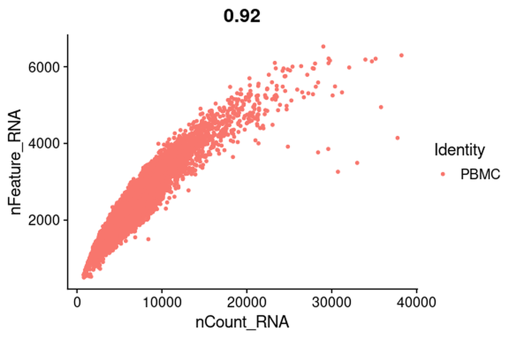
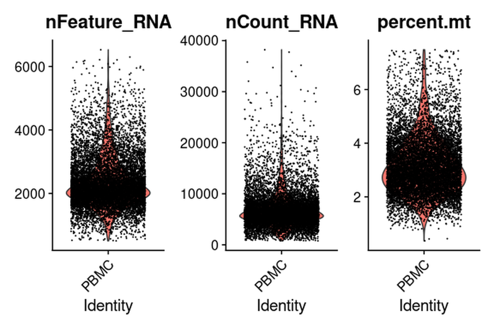
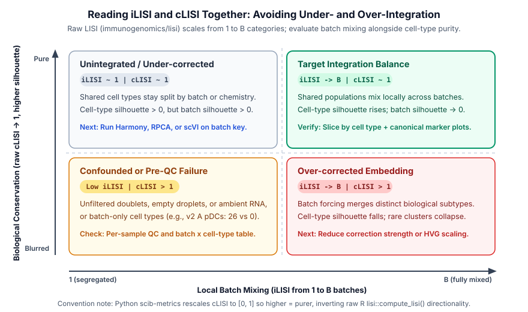
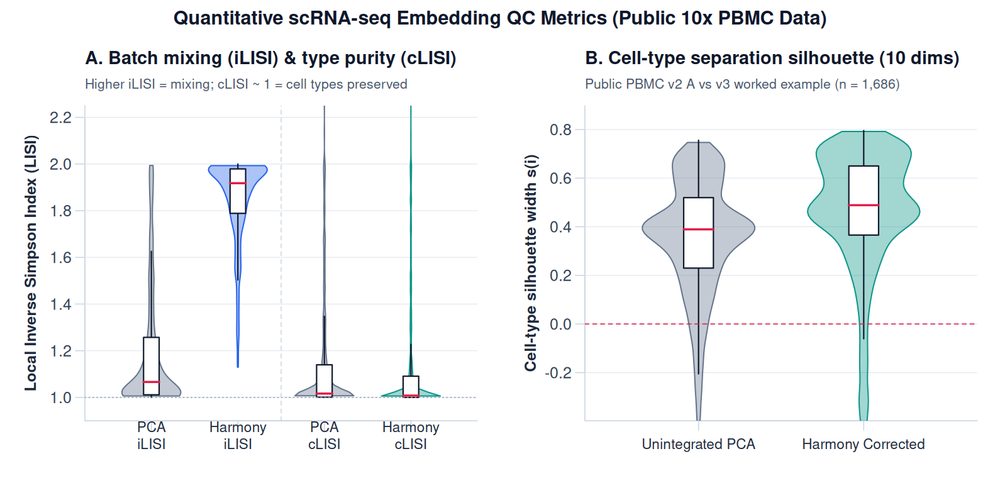

scRNA-seq Integration QC: LISI and Silhouette
Nasir Mahmood Abbasi, PhD
Bioinformatics Educator
When you combine single-cell RNA-seq samples from multiple donors, tissues, or 10x Chromium chemistries, quality control happens twice: first at the cell level within each sample so empty droplets and doublets do not distort downstream distances, and again after batch integration using iLISI, cLISI, and silhouette widths to check whether shared cell types mixed without blurring distinct biological states.
Format: Advanced template (about 25-35 minutes).
- What you will be able to do: set sample-stratified MAD bounds in R, run local neighborhood mixing and purity checks (
iLISIandcLISI), compute identical Euclidean silhouette scores in R and Python, and detect over-correction or batch-biology confounding via per-cell-type slices. - Prerequisites: basic single-cell QC concepts (Single-Cell QC Fundamentals) and an integrated Seurat or AnnData embedding (scRNA-seq Integration: Harmony, RPCA, and CCA).
- Data scope: Stage 1 uses all 1,686 public PBMC cells bundled across three batches (
10x Chromium (v2) A,v2 B, andv3) inselected_cells.csv; Stage 2 evaluates the 1,149 paired query cells (v2 Avsv3, withv2 Bheld out as the annotation reference) alongside reusable templates for your own Seurat or AnnData objects.
Stage 1: Pre-integration cell QC across samples and chemistries
If you are filtering a single sample for the first time, start with Single-Cell QC Fundamentals. In multi-donor or multi-chemistry studies (especially solid tumours paired with blood or adjacent normal tissue), pre-integration errors carry directly into integration metrics: unremoved empty droplets form low-complexity bridges between batches, doublets create artificial intermediate clusters that inflate cLISI and depress silhouette widths, and a single global gene-count floor removes intact cells from shallower libraries.
Apply these four checks per capture channel before merging or integrating:
- Empty droplets before count cutoffs: separate cell-containing droplets from the ambient RNA background per 10x lane using the multinomial test in
DropletUtils::emptyDrops()(FDR ≤ 0.001; Lun et al., 2019) or Cell Ranger's EmptyDrops filter before combining channels. - Joint metric inspection and tissue context: plot total UMIs (
nCount_RNA), detected genes (nFeature_RNA), and mitochondrial fraction (^MT-in human GRCh38,^mt-in mouse GRCm39) together rather than thresholding one axis in isolation. Dissociated solid tumours, metabolically active epithelial cells, and biopsy cores often show 10% to 25% mitochondrial reads, so copying a fixed 5% PBMC ceiling can selectively remove malignant or myeloid compartments (Luecken & Theis, 2019; Germain et al., 2020). - Sample-stratified adaptive MAD bounds: compute median absolute deviation (MAD) bounds on log-transformed depth or gene counts separately per sample or chemistry with
scuttle::isOutlier()(for exampleisOutlier(metric, nmads = 3, type = "both", log = TRUE, batch = sample_id)). Settinglog = TRUEtransforms values to the log2 scale before computing the median and MAD so heavy right tails do not inflate the spread or yield negative lower bounds. As a starting point, Heumos et al. (2023) suggest 5 MADs for total counts and detected genes and 3 MADs (type = "higher") for mitochondrial fraction, then inspecting marker genes in flagged cells before dropping them. - Per-lane doublets and ambient RNA: run
scDblFinder(sce, samples = "lane_id")(defaultdbr.per1k = 0.008for standard 10x Chromium; Germain et al., 2021) separately per microfluidic lane because two cells can only co-encapsulate within the same physical capture. Where lysed cells shed abundant background transcripts (such as LYZ, hemoglobin, or immunoglobulins), inspect and subtract ambient profiles withSoupX(Young & Behjati, 2020) orCellBender(Fleming et al., 2023).

nCount_RNA) and detected genes (nFeature_RNA) flags low-complexity droplets at the bottom left and potential high-UMI doublets at the top right prior to integration.
nFeature_RNA), total UMIs (nCount_RNA), and mitochondrial percentage (percent.mt).Worked base-R check: why global gene-count cutoffs fail across 10x chemistries
The bundled selected_cells.csv table holds 1,686 public human PBMC cells across three batches (10x Chromium (v2) A, 10x Chromium (v2) B, and 10x Chromium (v3)). Run this base-R script from the repository root to compare batch-stratified 3-MAD bounds on log10(detected_genes) against a uniform 1,500-gene cutoff (note that any log base, whether log10 here or log2 in scuttle::isOutlier(..., log = TRUE), produces identical back-transformed gene thresholds):
cells <- read.csv("files/pbmc-methods-worked-example/observed/selected_cells.csv",
stringsAsFactors = FALSE)
by_batch <- do.call(rbind, lapply(split(cells, cells$batch), function(df) {
lx <- log10(df$detected_genes)
med <- median(lx)
m <- mad(lx, constant = 1.4826)
data.frame(
batch = df$batch[1],
n = nrow(df),
median_genes = median(df$detected_genes),
iqr_genes = IQR(df$detected_genes),
mad3_low = round(10^(med - 3 * m), 1),
mad3_high = round(10^(med + 3 * m), 1),
below_1500 = sum(df$detected_genes < 1500)
)
}))
print(by_batch, row.names = FALSE)Observed output (executed locally with R 4.6.1):
batch n median_genes iqr_genes mad3_low mad3_high below_1500
10x Chromium (v2) A 590 898.5 513 238.8 3380.7 508
10x Chromium (v2) B 537 913.0 400 367.9 2265.7 460
10x Chromium (v3) 559 1597.0 991 562.4 4534.6 229Interpretation: 10x v3 detects roughly 1.8 times as many genes per cell (median 1,597.0) as 10x v2 (898.5 and 913.0). Applying even the v3 lower 3-MAD floor (562.4 genes) globally would discard intact v2 lymphocytes, while a naive 1,500-gene cutoff removes 86.1% (508 / 590) of v2 A cells. Stratifying QC thresholds by batch preserves cell-type proportions before integration starts.
Stage 2: Prerequisites and metric definitions for post-integration QC
Post-integration diagnostics assume you have a saved Seurat or AnnData object containing a cell-by-dimension embedding (such as unintegrated PCA alongside Harmony, RPCA, CCA, or scVI), a batch/sample column, and a curated cell-type or cluster column. In Seurat v5 workflows using IntegrateLayers() (Seurat v5 integration vignette), integrated reductions are typically named "integrated.harmony", "integrated.rpca", or "integrated.cca" (while standalone RunHarmony() uses "harmony"); always verify exact reduction names with Reductions(seurat_obj) in R or adata.obsm.keys() in Python.
Pre-flight check before scoring: verify packages and input integrity on a copy of your saved object.
- R environment:
Rscript -e 'stopifnot(requireNamespace("Seurat", quietly=TRUE), requireNamespace("lisi", quietly=TRUE), requireNamespace("cluster", quietly=TRUE)); sessionInfo()'(installlisifrom immunogenomics/lisi). - Python environment:
python -c 'import pandas, numpy, sklearn; print(pandas.__version__, numpy.__version__, sklearn.__version__)'(for large scIB benchmarks, see scib-metrics). - Matrix and metadata checks: confirm the embedding matrix is numeric and finite, cell barcodes match metadata row names in exact order, and batch/annotation columns have zero
NAor empty-string entries.
LISI and silhouette evaluate complementary properties of an embedding, and neither can separate batch effects from biology if experimental design confounds the two (for instance, when each batch holds a completely different tissue or cell type):
| Metric | Question answered | Raw scale (R lisi / cluster) |
Target direction | Main blind spot |
|---|---|---|---|---|
| iLISI (batch LISI) | How many batches are locally represented around each cell? | 1 to B batches (default perplexity = 30) |
Higher (toward B for shared cell types) |
Can reach B via over-correction that erases rare subtypes; batch-only cell types cannot reach B. |
| cLISI (cell-type LISI) | How many cell-type labels mix inside each local neighborhood? | 1 to C labels in R lisi (Python scib-metrics rescales to [0, 1]) |
Near 1 in raw R lisi (near 1 = purer in rescaled scib-metrics) |
Depends on annotation accuracy; noisy labels mimic over-correction. |
| Cell-type silhouette (ASW_label) | How tight is each cell's cluster relative to its nearest neighboring cluster? | -1 to +1 (mean per cluster or overall) |
Higher positive values than unintegrated PCA | Favors compact spherical clusters; can penalize continuous differentiation trajectories. |
| Batch silhouette (ASW_batch) | Do batches still separate globally within the embedding? | -1 to +1 in raw silhouette (scib-metrics reports 1 - |s(i)| per cell type) |
Near 0 in raw silhouette (near 1 in scib-metrics) |
Global batch overlap does not guarantee local mixing within individual cell types. |

Calculate LISI in R
lisi::compute_lisi(X, meta_data, label_colnames, perplexity = 30) places a Gaussian kernel around each cell tuned to an effective neighborhood size of perplexity (default 30) and computes the inverse Simpson's index of the supplied labels in that neighborhood. Save the block below as lisi_qc.R and run it in the directory containing your read-only seurat_obj.rds. Replace "harmony" (for Seurat v5 IntegrateLayers(), often "integrated.harmony") and c("patient_id", "cell_type") with the reduction and metadata columns present in your object:
# Input: seurat_obj.rds, containing an existing PCA or integration reduction
# Outputs: lisi_scores.csv and lisi_metadata.csv; the input RDS is read only
library(lisi)
library(Seurat)
seurat_obj <- readRDS("seurat_obj.rds")
reduction_name <- if ("harmony" %in% Reductions(seurat_obj)) "harmony" else "pca"
if (!reduction_name %in% Reductions(seurat_obj)) {
stop("No selected reduction is available; inspect Reductions(seurat_obj)")
}
emb <- Embeddings(seurat_obj, reduction_name)
meta <- seurat_obj@meta.data
if (!all(rownames(emb) %in% rownames(meta))) {
stop("Some embedding cell names are missing from Seurat metadata")
}
meta <- meta[rownames(emb), , drop = FALSE]
labels_to_eval <- c("patient_id", "cell_type") # replace with your metadata columns
if (!all(labels_to_eval %in% colnames(meta))) {
stop("Update labels_to_eval: one or more metadata columns are missing")
}
if (anyNA(meta[, labels_to_eval, drop = FALSE])) {
stop("Resolve missing values in the selected labels before calculating LISI")
}
lisi_res <- compute_lisi(emb, meta, labels_to_eval)
write.csv(lisi_res, file = "lisi_scores.csv", row.names = TRUE)
write.csv(meta, file = "lisi_metadata.csv")
summary(lisi_res)
Illustrative example output (abbreviated, 2 batches and 9 cell types at default perplexity = 30):
patient_id cell_type
Min. :1.000 Min. :1.000
1st Qu.:1.789 1st Qu.:1.000
Median :1.918 Median :1.008
Mean :1.832 Mean :1.084
3rd Qu.:1.979 3rd Qu.:1.091
Max. :2.000 Max. :2.940 Check after running lisi_qc.R:
- Confirm
nrow(lisi_res) == nrow(emb)and thatpatient_id(iLISI) stays within[1, n_batches]whilecell_type(cLISI) stays within[1, n_cell_types]. - If conclusions sit near a decision boundary, rerun with
perplexity = 15andperplexity = 50(keepingperplexitywell below the smallest cell-type count) and record the setting used.
Summarize by cluster without losing cell alignment
Run this summary in a fresh Rscript process after lisi_qc.R finishes. Reloading lisi_metadata.csv and aligning row names by cell barcode prevents silent row-order mismatches:
# Inputs: lisi_scores.csv and lisi_metadata.csv, written by the first block
meta <- read.csv("lisi_metadata.csv", row.names = 1, check.names = FALSE)
lisi_df <- read.csv("lisi_scores.csv", row.names = 1, check.names = FALSE)
if (!setequal(rownames(meta), rownames(lisi_df))) {
stop("LISI output cells do not match the metadata cells")
}
lisi_df <- lisi_df[rownames(meta), , drop = FALSE]
meta$ilisi <- lisi_df$patient_id
meta$clisi <- lisi_df$cell_type
if (!"seurat_clusters" %in% colnames(meta)) {
stop("Add or select a cluster-label column before summarizing")
}
aggregate(cbind(ilisi, clisi) ~ seurat_clusters, data = meta, median)
Illustrative example output (abbreviated cluster medians):
seurat_clusters ilisi clisi
1 0 1.912401 1.004112
2 1 1.884111 1.026402
3 2 1.366190 1.528612Notice cluster 2 in this pattern: lower iLISI alongside elevated cLISI flags either a rare population sitting near a neighboring lineage or a batch-specific cluster that needs marker inspection.
Calculate silhouette values: equivalent R and Python alternatives
While LISI inspects local neighborhoods, silhouette width measures global cluster cohesion versus separation: for each cell i, s(i) = (b(i) - a(i)) / max(a(i), b(i)), where a(i) is mean Euclidean distance to other cells in its own cluster and b(i) is mean distance to the nearest neighboring cluster. Export your embedding coordinates (silhouette_embedding.csv: cell_id plus numeric dimensions) and labels (silhouette_labels.csv: cell_id and cluster) so R and Python compute identical scores.
Memory scaling note: computing all pairwise distances via stats::dist() scales quadratically (O(n^2): 50,000 cells require ~10 GB just for the distance triangle). For atlases above ~20,000 cells, use stratified downsampling per batch and cluster (or chunked evaluation via scib_metrics.silhouette_label() in Python) and document the sampling fraction.
R: silhouette from the shared embedding and labels
# Inputs: silhouette_embedding.csv (cell_id, dim1, dim2, ...) and
# silhouette_labels.csv (cell_id, cluster)
# Output: silhouette_per_cell.csv; inputs remain unchanged
library(cluster)
embedding_df <- read.csv("silhouette_embedding.csv", check.names = FALSE,
stringsAsFactors = FALSE)
labels_df <- read.csv("silhouette_labels.csv", check.names = FALSE,
stringsAsFactors = FALSE)
if (!"cell_id" %in% names(embedding_df) ||
!all(c("cell_id", "cluster") %in% names(labels_df))) {
stop("Expected cell_id in embedding and cell_id plus cluster in labels")
}
if (anyNA(embedding_df$cell_id) || anyNA(labels_df$cell_id) || any(!nzchar(embedding_df$cell_id)) || any(!nzchar(labels_df$cell_id))) {
stop("Cell IDs must be present and non-empty")
}
if (anyDuplicated(embedding_df$cell_id) || anyDuplicated(labels_df$cell_id)) {
stop("Cell IDs must be unique in both input files")
}
if (!setequal(embedding_df$cell_id, labels_df$cell_id)) {
stop("Embedding and label inputs must contain the same cell IDs")
}
embedding_df <- embedding_df[match(labels_df$cell_id, embedding_df$cell_id), , drop = FALSE]
coords <- as.matrix(embedding_df[, setdiff(names(embedding_df), "cell_id"), drop = FALSE])
storage.mode(coords) <- "numeric"
if (nrow(coords) != nrow(labels_df) || ncol(coords) < 1L || any(!is.finite(coords))) {
stop("Embedding must be a finite numeric matrix with one row per labeled cell")
}
cluster_label <- factor(labels_df$cluster)
if (anyNA(cluster_label) || any(!nzchar(as.character(cluster_label))) || nlevels(cluster_label) < 2L || nlevels(cluster_label) >= nrow(coords)) {
stop("Silhouette requires non-missing labels for 2 to n_cells - 1 clusters")
}
distances <- stats::dist(coords, method = "euclidean")
sil <- cluster::silhouette(as.integer(cluster_label), distances)
result <- data.frame(cell_id = labels_df$cell_id,
cluster = as.character(cluster_label),
silhouette = sil[, "sil_width"])
write.csv(result, "silhouette_per_cell.csv", row.names = FALSE)
cat("Mean silhouette across cells:", mean(result$silhouette), "\n")
Python alternative: same embedding, labels, and distance
# Inputs: the same silhouette_embedding.csv and silhouette_labels.csv
# Output: silhouette_per_cell.csv; inputs remain unchanged
import numpy as np
import pandas as pd
from sklearn.metrics import silhouette_samples, silhouette_score
embedding_df = pd.read_csv("silhouette_embedding.csv")
labels_df = pd.read_csv("silhouette_labels.csv")
if "cell_id" not in embedding_df or not {"cell_id", "cluster"}.issubset(labels_df.columns):
raise ValueError("Expected cell_id in embedding and cell_id plus cluster in labels")
if embedding_df["cell_id"].isna().any() or labels_df["cell_id"].isna().any():
raise ValueError("Cell IDs must be present")
if embedding_df["cell_id"].duplicated().any() or labels_df["cell_id"].duplicated().any():
raise ValueError("Cell IDs must be unique in both input files")
if set(embedding_df["cell_id"]) != set(labels_df["cell_id"]):
raise ValueError("Embedding and label inputs must contain the same cell IDs")
embedding_df = embedding_df.set_index("cell_id").loc[labels_df["cell_id"]]
embedding = embedding_df.to_numpy(dtype=float)
labels = labels_df["cluster"].astype("string")
if embedding.ndim != 2 or embedding.shape[0] != len(labels) or embedding.shape[1] < 1:
raise ValueError("Embedding must have one or more dimensions and one row per labeled cell")
if not np.isfinite(embedding).all() or labels.isna().any() or labels.eq("").any():
raise ValueError("Embedding must be finite and cluster labels non-missing")
n_labels = labels.nunique()
if not 2 <= n_labels <= len(labels) - 1:
raise ValueError("Silhouette requires 2 to n_cells - 1 distinct labels")
scores = silhouette_samples(embedding, labels.to_numpy(), metric="euclidean")
result = pd.DataFrame({"cell_id": labels_df["cell_id"],
"cluster": labels.astype(str), "silhouette": scores})
result.to_csv("silhouette_per_cell.csv", index=False)
print("Mean silhouette across cells:", silhouette_score(embedding, labels.to_numpy(), metric="euclidean"))
Per-cell silhouette widths range from -1 to +1: positive values indicate a cell sits closer to its assigned label than to the nearest alternative; values near 0 sit on a cluster boundary (common along activation or differentiation gradients); negative values flag cells closer to another cluster under the chosen metric. Never use silhouette alone to override marker-gene biology or force continuous lineages into disconnected spheres.
Worked benchmark: PCA versus Harmony silhouette and slice analysis (1,149 PBMC cells)
Run this R script from the repository root on the bundled 20-dimensional PCA (embeddings_pca.csv) and Harmony (embeddings_harmony.csv) embeddings for the 1,149 paired 10x Chromium (v2) A and 10x Chromium (v3) query cells. Notice it reports both pooled averages and a slice table by cell type and batch count:
pca <- read.csv("files/pbmc-methods-worked-example/observed/embeddings_pca.csv",
check.names = FALSE, stringsAsFactors = FALSE)
har <- read.csv("files/pbmc-methods-worked-example/observed/embeddings_harmony.csv",
check.names = FALSE, stringsAsFactors = FALSE)
cells <- read.csv("files/pbmc-methods-worked-example/observed/selected_cells.csv",
stringsAsFactors = FALSE)
cells <- cells[match(pca$cell_id, cells$cell_id), ]
s_pca <- cluster::silhouette(as.integer(factor(cells$source_label)), dist(as.matrix(pca[, -1])))[, "sil_width"]
s_har <- cluster::silhouette(as.integer(factor(cells$source_label)), dist(as.matrix(har[, -1])))[, "sil_width"]
b_pca <- cluster::silhouette(as.integer(factor(cells$batch)), dist(as.matrix(pca[, -1])))[, "sil_width"]
b_har <- cluster::silhouette(as.integer(factor(cells$batch)), dist(as.matrix(har[, -1])))[, "sil_width"]
cat(sprintf("Embedding cells: %d (v2 A = %d, v3 = %d)\n", nrow(pca),
sum(cells$batch == "10x Chromium (v2) A"), sum(cells$batch == "10x Chromium (v3)")))
cat(sprintf("Mean cell-type silhouette (9 PBMC labels): PCA = %.4f, Harmony = %.4f\n", mean(s_pca), mean(s_har)))
cat(sprintf("Mean batch silhouette (2 chemistries): PCA = %.4f, Harmony = %.4f\n\n", mean(b_pca), mean(b_har)))
tab <- table(cells$source_label, cells$batch)
by_type <- data.frame(
cell_type = rownames(tab),
n_v2A = as.integer(tab[, "10x Chromium (v2) A"]),
n_v3 = as.integer(tab[, "10x Chromium (v3)"]),
pca_sil = round(as.numeric(tapply(s_pca, cells$source_label, mean)[rownames(tab)]), 4),
harmony_sil = round(as.numeric(tapply(s_har, cells$source_label, mean)[rownames(tab)]), 4)
)
by_type$delta <- round(by_type$harmony_sil - by_type$pca_sil, 4)
print(by_type, row.names = FALSE)Observed output (executed locally with R 4.6.1 and cluster):
Embedding cells: 1149 (v2 A = 590, v3 = 559)
Mean cell-type silhouette (9 PBMC labels): PCA = 0.2731, Harmony = 0.3410
Mean batch silhouette (2 chemistries): PCA = 0.0636, Harmony = 0.0008
cell_type n_v2A n_v3 pca_sil harmony_sil delta
B cell 80 80 0.4361 0.4884 0.0523
CD14+ monocyte 80 80 0.1725 0.3315 0.1590
CD16+ monocyte 80 80 0.4007 0.5257 0.1250
CD4+ T cell 80 80 0.1518 0.1894 0.0376
Cytotoxic T cell 80 80 0.3097 0.3613 0.0516
Dendritic cell 55 38 0.0698 0.0520 -0.0178
Megakaryocyte 29 41 0.4249 0.4514 0.0265
Natural killer cell 80 80 0.1750 0.2323 0.0573
Plasmacytoid dendritic cell 26 0 0.5455 0.5675 0.0220Slice-based interpretation:
- Pooled gain: Harmony collapses the batch silhouette toward zero (0.0636 to 0.0008) while raising the 9-population cell-type silhouette (0.2731 to 0.3410), led by
CD14+ monocyte(+0.1590) andCD16+ monocyte(+0.1250) where v2/v3 chemistry splits were largest in PCA. - Hidden slice behavior:
Dendritic cellsilhouette dips slightly (0.0698 to 0.0520), andPlasmacytoid dendritic cell(pDC) appears only inv2 A(n_v2A = 26, n_v3 = 0). Because pDCs have no counterpart inv3, the bundled LISI summary (lisi_by_label.csv) shows Harmony nudging pDCiLISIfrom 1.26 to 1.37 only by raising pDCcLISIfrom 1.36 to 1.53 (mixing slightly with non-pDC neighbors). Inspecting per-cell-type slices catches that trade-off immediately.
Read the results as a comparison
Evaluate the exact same cells and label definitions across unintegrated and integrated embeddings. Report medians and interquartile ranges for per-cell LISI, plus per-cluster and per-cell-type summaries for silhouette alongside the reduction name, number of dimensions, LISI perplexity, and package versions. Compare these global silhouette results with the full LISI and UMAP walkthrough in scRNA-seq Integration: Harmony, RPCA, and CCA.

v2 A vs v3 query cells): (A) Harmony raises batch-mixing iLISI toward 2 while keeping cell-type purity cLISI near 1; (B) cell-type silhouette distributions (10-dim subset shown here; full 20-dim means are 0.2731 vs 0.3410 above) shift higher after batch correction.- High batch iLISI + stable cLISI near 1: consistent with local batch mixing while preserving supplied annotations, though marker dot plots are still required to verify rare subtypes.
- Rising cLISI (> 1 in raw R
lisi): local neighborhoods hold mixed cell-type labels. Check whether labels are noisy or doublets remain before concluding over-correction. - Low or negative silhouette: flags weak separation under Euclidean distance in that embedding; inspect cluster sizes, transitional states, and marker expression before re-clustering.
Hypothetical decision check
In a study where Batch 1 contains only T cells and Batch 2 contains only myeloid cells, should you tune integration until iLISI approaches 2, or can LISI and silhouette tell whether batch or cell identity drives the separation?
Reasoned feedback
Neither metric can separate technical batch from biological identity when they are completely confounded: pushing iLISI toward 2 would force T cells and myeloid cells together and degrade cLISI and marker separation. Report the confounded design limitation, keep batches unmixed across disjoint lineages, and evaluate integration only where cell types are shared across batches.
Troubleshoot common failures
Error in compute_lisi(...)or missing reduction/columns: confirmreduction_nameexists inReductions(seurat_obj)(for Seurat v5, often"integrated.harmony"rather than"harmony"), alignmeta <- meta[rownames(emb), , drop = FALSE], and remove or imputeNAlabels before scoring.ValueError: Number of labels is 1. Valid values are 2 to n_samples - 1 (inclusive)(scikit-learn) orNAin Rcluster::silhouette(): checktable(labels)before scoring; silhouette cannot evaluate a subset with fewer than 2 clusters or where every cell has a unique label.Error: cannot allocate vector of size ...instats::dist(): full pairwise distances grow asO(n^2). Above ~20,000 cells, downsample proportionally within each batch-by-cell-type stratum (or use chunkedscib_metrics.silhouette_label()in Python) and report the exact sample size.- Batch iLISI stays near 1 after integration: verify that you scored the integrated reduction rather than
"pca", check batch sample counts per cell type, and confirm that low mixing is not driven by batch-only populations (as seen withv2 ApDCs above). - cLISI increases and cell-type silhouette drops after integration: inspect doublet scores, annotation granularity, and canonical lineage markers; if distinct subtypes merged, reduce integration strength (for example, Harmony
theta) or compare against RPCA/scVI.
Recap and next steps
- Filter each capture lane with empty-droplet tests, per-sample MAD bounds, and per-lane doublet detection before merging batches.
- Evaluate post-integration embeddings on identical cells using batch mixing (iLISI, batch silhouette) paired with biological conservation (cLISI, cell-type silhouette) and cell-type slices.
- Continue to Single-Cell RNA-seq Downstream Analysis once integration metrics and lineage markers agree, or revisit Cell-Type Annotation Methods if high cLISI points to uncertain labels.
References
- immunogenomics/lisi GitHub repository: R implementation of
compute_lisi()and effective local category diversity. - scib-metrics documentation: Python/JAX implementations of
ilisi_knn,clisi_knn,silhouette_batch, andsilhouette_label. - scikit-learn silhouette coefficient guide: distance-based definition and valid cluster-count bounds.
- Seurat v5 integration vignette:
IntegrateLayers()workflow and integrated reduction naming. - AnnData write_h5ad reference: saving scored objects to a separate output file.
- Korsunsky et al. (2019), Harmony: fast, sensitive single-cell integration and LISI metrics in Nature Methods.
- Luecken et al. (2022), scIB benchmark: benchmarking atlas-level data integration across batch-removal and biological conservation metrics in Nature Methods.
- Heumos et al. (2023), Single-cell best practices: adaptive MAD thresholds, empty-droplet testing, and ambient RNA correction in Nature Reviews Genetics.
- Lun et al. (2019), EmptyDrops (DropletUtils): distinguishing cell-containing droplets from ambient RNA in Genome Biology.
- Germain et al. (2020), pipeComp and Germain et al. (2021), scDblFinder (Bioconductor): preprocessing sensitivity and per-lane doublet detection.
- Luecken & Theis (2019), Young & Behjati (2020), SoupX, and Fleming et al. (2023), CellBender for multivariate QC and ambient RNA removal.
Because this template reads user-prepared objects, record the installed R and Python package versions with each run using the commands above. Check package-specific arguments against the official references linked here; report reproducibility problems through the Contact page.
Author: Nasir Mahmood Abbasi, PhD - Category: Single-Cell RNA-seq